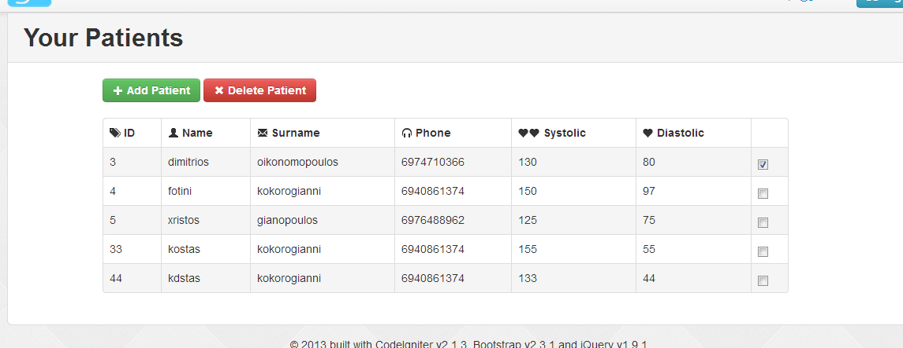

What is the easiest way to disable/enable buttons and links (jQuery + Bootstrap)
Sometimes I use anchors styled as buttons and sometimes I just use buttons. I want to disable specific clicky-things so that:
- They look disabled
- They stop being clicked
How can I do this?
Answer
Buttons
Buttons are simple to disable as disabled is a button property which is
handled by the browser:
<input type="submit" class="btn" value="My Input Submit" disabled/> <input type="button" class="btn" value="My Input Button" disabled/> <button class="btn" disabled>My Button</button>
To disable these with a custom jQuery function, you'd simply make use of
fn.extend():
// Disable function jQuery.fn.extend({ disable: function(state) { return this.each(function() { this.disabled = state; }); } }); // Disabled with: $('input[type="submit"], input[type="button"], button').disable(true); // Enabled with: $('input[type="submit"], input[type="button"], button').disable(false);
JSFiddle disabled button and input demo.
Otherwise you'd make use of jQuery's prop() method:
$('button').prop('disabled', true);
$('button').prop('disabled', false);
Anchor Tags
It's worth noting that disabled isn't a valid property for anchor tags. For
this reason, Bootstrap uses the following styling on its .btn elements:
.btn.disabled, .btn[disabled] { cursor: default; background-image: none; opacity: 0.65; filter: alpha(opacity=65); -webkit-box-shadow: none; -moz-box-shadow: none; box-shadow: none; color: #333; background-color: #E6E6E6; }
Note how the [disabled] property is targeted as well as a .disabled class.
The .disabled class is what is needed to make an anchor tag appear disabled.
<a href="http://example.com" class="btn">My Link</a>
Of course, this will not prevent links from functioning when clicked. The
above link will take us to http://example.com. To prevent this, we can add in
a simple piece of jQuery code to target anchor tags with the disabled class
to call event.preventDefault():
$('body').on('click', 'a.disabled', function(event) {
event.preventDefault();
});
We can toggle the disabled class by using toggleClass():
jQuery.fn.extend({ disable: function(state) { return this.each(function() { var $this = $(this); $this.toggleClass('disabled', state); }); } }); // Disabled with: $('a').disable(true); // Enabled with: $('a').disable(false);
JSFiddle disabled link demo.
Combined
We can then extend the previous disable function made above to check the type
of element we're attempting to disable using is(). This way we can
toggleClass() if it isn't an input or button element, or toggle the
disabled property if it is:
// Extended disable function jQuery.fn.extend({ disable: function(state) { return this.each(function() { var $this = $(this); if($this.is('input, button, textarea, select')) this.disabled = state; else $this.toggleClass('disabled', state); }); } }); // Disabled on all: $('input, button, a').disable(true); // Enabled on all: $('input, button, a').disable(false);
Full combined JSFiddle demo.
It's worth further noting that the above function will also work on all input types.
Suggest
I can't think a simpler/easier way! ;-)
Using Anchor tags (Links) :
<a href="#delete-modal" class="btn btn-danger" id="delete">Delete</a>
To enable the Anchor tag:
$('#delete').removeClass('disabled');
$('#delete').attr("data-toggle", "modal");

To disable the Anchor tag:
$('#delete').addClass('disabled');
$('#delete').removeAttr('data-toggle');